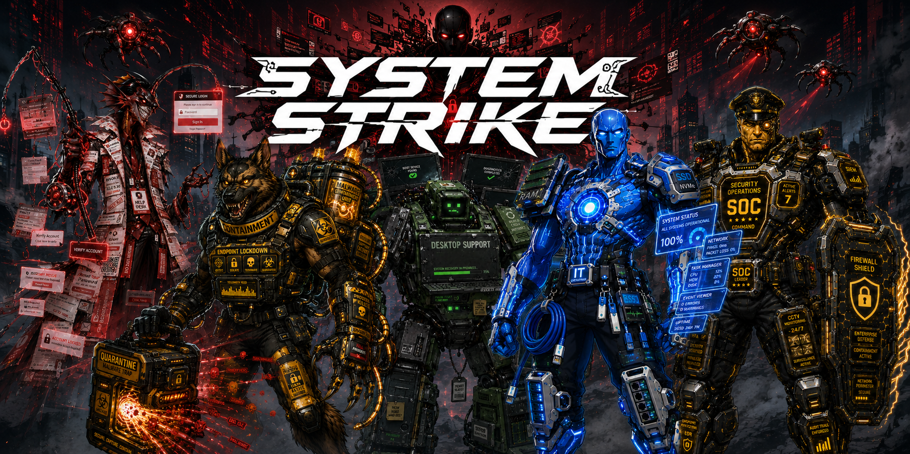
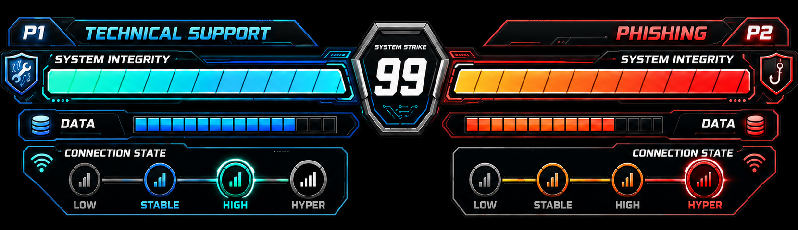
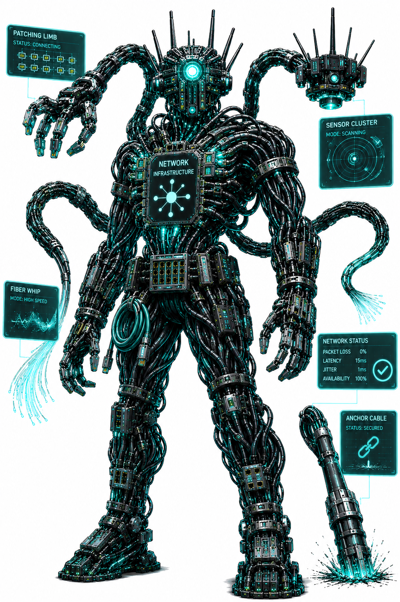
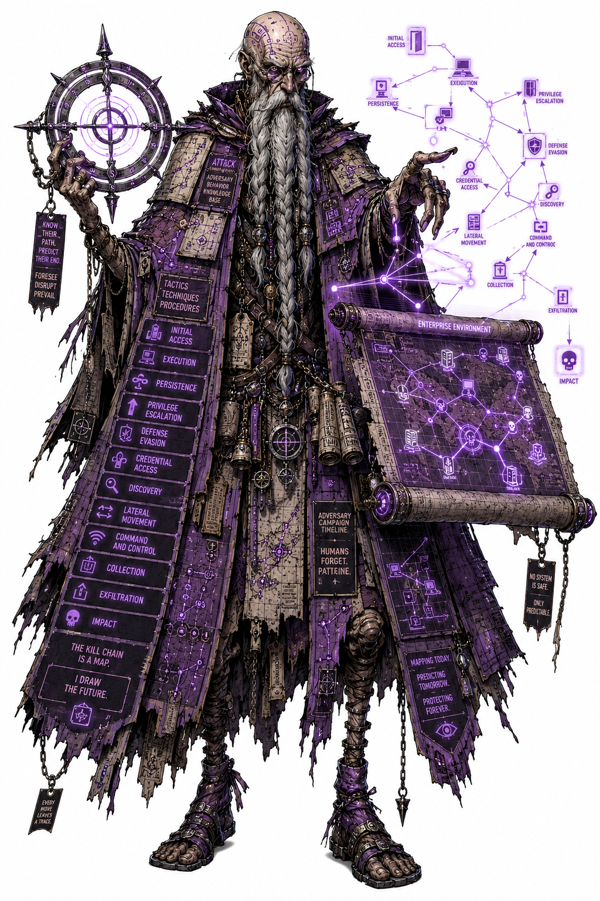
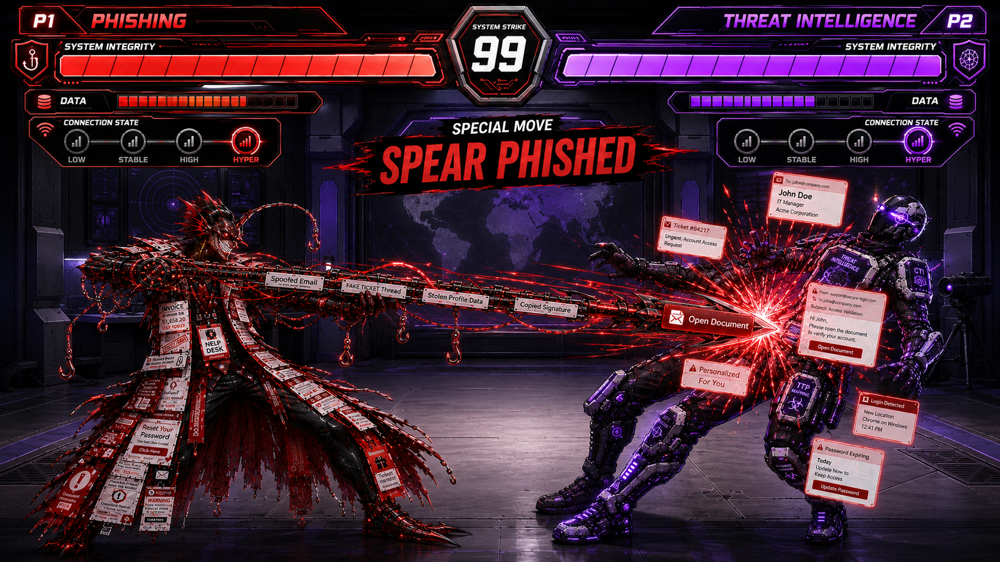
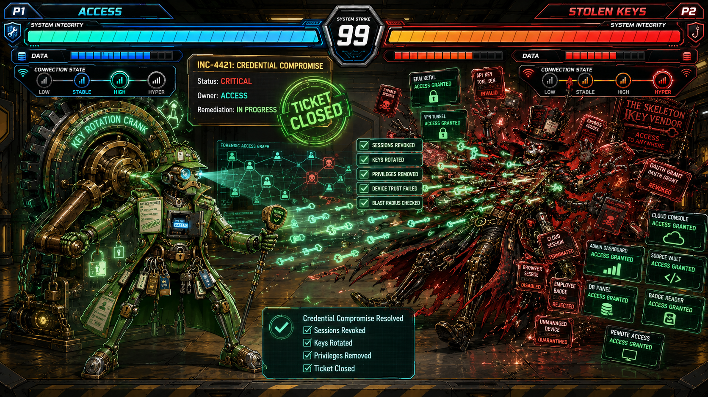

Learning IT and cybersecurity can be a battle. System Strike is a fighting RPG where players learn information technology and cybersecurity almost without realizing it. Created by Dom Calvello, the universe transforms IT operations, networking infrastructure, SOC operations, threat intelligence, security technologies, and threat actors into larger-than-life arcade fighters. Real-world concepts become unforgettable heroes, villains, special moves, stages, and stories, creating an immersive world where technology, strategy, and arcade combat collide.
System Strike brings the digital world to life by turning everyday IT and cybersecurity problems into character-driven battles. On one side are the defenders: support teams, network systems, security tools, access controls, and analysts working to keep systems stable. On the other side are the attackers: malware, phishing, botnets, stolen credentials, insider threats, and system failures trying to break through.
Each fighter is built around how their real-world counterpart behaves. Attackers exploit weak points, flood networks, steal access, and disrupt operations. Defenders investigate alerts, block threats, restore services, contain damage, and recover control. Every move, HUD element, warning banner, and attack effect is designed to show what is happening inside the system while the fight unfolds on screen.
The result is a visually immersive and educational game world where players can see how systems fail, how attackers strike, and how defenders respond.

Every fighter begins each match with 100% System Integrity, representing their overall stability, health, and ability to stay operational. As fighters take damage, their System Integrity degrades. When it reaches zero, the character enters SYSTEM FAILURE - System Strike’s version of the classic finishing-state moment.
The HUD also includes two power systems: Data and Connection State.
Data represents the fighter’s available digital resources. The more Data a fighter has, the stronger their abilities become. Special moves, advanced attacks, and high-impact defenses can draw from this meter, making Data one of the most important resources in battle.
Connection State represents how stable and protected a fighter’s link to the digital world is. It has four levels: Low, Medium, High, and Hyper. As Connection State improves, the fighter gains temporary defensive advantages, making them harder to disrupt, overload, or knock offline.
Together, System Integrity, Data, and Connection State create a HUD that teaches core technology ideas through gameplay: systems must stay healthy, data must be protected and used wisely, and strong connections can determine whether a fighter survives or collapses.



Every move in System Strike transforms real-world concepts into fast-paced arcade combat. Play as Phishing and unleash attacks such as Typosquatting, Whaling, and Spear Phishing, each brought to life through unique animations, effects, and gameplay mechanics. Whether you're launching attacks, defending systems, investigating incidents, or restoring services, every move is designed to be both visually exciting and rooted in real-world technology.

Every great fighting game needs a memorable finisher, and System Strike is no different. When a fighter’s System Integrity reaches zero, the battle ends in:
SYSTEM FAILURE.